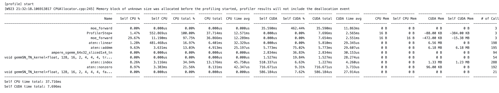
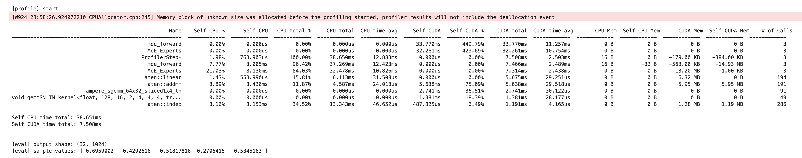

Code02: 从零手撕 MoE(DONE)#
Author by: 张天翔、ZOMI
Mixture of Experts (MoE) 模型通过引入稀疏激活机制——区别于传统 dense 模型每次激活全部参数的模式，MoE 仅让输入样本触发部分专家模块参与计算——在保持模型总参数容量（甚至提升容量）同时，将单次前向传播的计算开销降低至激活专家的比例（如 Top-K=2、8 个专家时，计算量仅为全激活的 25%）。
本文基于 PyTorch 实现 MoE 单机版本，结合代码详解核心原理。

1. MoE 核心原理#
MoE 模型的设计灵感源于“分而治之”的思想：通过多个专业子网络（专家）协同处理不同输入模式，再由门控网络实现高效调度。其核心由两个组件构成：
专家网络(Expert)：多个独立的前馈神经网络（如 MLP），每个专家专注学习输入数据的某类特征模式（例如在 NLP 任务中，部分专家擅长语义理解，部分擅长句法分析）。独立参数确保各专家不会相互干扰，能形成差异化的特征提取能力。

门控网络(Gate / Router)：以输入样本为依据，计算每个专家对该样本的“匹配度”，并选择最优的 K 个专家参与计算。门控的核心目标是“高效路由”——既要让样本匹配到最适合的专家，又要避免少数专家过载、多数专家闲置的失衡问题。
路由公式：门控网络通过以下两步完成样本分配与输出计算：
Top-K 选择：先通过线性层将输入映射为专家匹配度（logits），经 softmax 归一化为概率后，选择概率最高的 K 个专家（确保稀疏激活）：
具体来说，我们通过将除了 TopK 专家的权重设置成负无穷，之后再经过 softmax，没有被选中的专家的权重就约等于 0。
其中 \(W_g\) 是门控网络的权重矩阵，\(\text{topk\_probs}\) 是选中专家的权重（用于后续输出加权），\(\text{topk\_indices}\) 是选中专家的索引。

输出计算：将样本输入选中的 K 个专家，再按门控给出的权重加权求和，得到最终输出（融合多专家的优势）：
其中 \(w_i\) 是 \(\text{topk\_probs}\) 中的第 i 个权重，\(E_i(x)\) 是第 i 个专家的输出。
负载均衡损失（Shazeer et al., 2017）：若缺少负载均衡约束，门控可能因初始参数偏好或训练正反馈，持续将样本分配给少数专家（“热门专家”），导致其他专家闲置（模型实际容量未被利用）。该损失通过两个维度约束均衡性：
\(\text{importance}\)：每个专家的总路由概率（反映专家的“总重要性”），其方差 \(\text{Var}\) 越小，说明各专家的整体参与度越均衡；
\(\text{usage}_i\)：第 i 个专家的使用率（分配给该专家的样本占比），\(\text{routing}_i\)：第 i 个专家的平均路由权重（分配样本对该专家的依赖度），二者乘积确保“分配数量”与“分配质量”双重均衡。
2. 专家模块#
每个专家是简单的两层全连接网络（MLP），是 MoE 模型的“特征提取单元”：
import torch
import torch.nn as nn
import torch.nn.functional as F
import torch.autograd.profiler as profiler
from torch.profiler import profile, record_function, ProfilerActivity
# 专家模块
class Expert(nn.Module):
def __init__(self, input_dim, hidden_dim, output_dim):
super().__init__()
# 双层 MLP：Linear→GELU→Linear
self.net = nn.Sequential(
nn.Linear(input_dim, hidden_dim),
nn.GELU(), # 比 ReLU 更平滑的激活函数
nn.Linear(hidden_dim, output_dim))
def forward(self, x):
return self.net(x) # 前向传播
代码中 nn.Sequential封装了线性变换和激活函数：线性层（Linear）负责特征维度映射（如从 input_dim 到 hidden_dim），激活函数引入非线性，让专家能学习复杂的输入-输出关系；
其中 GELU 激活函数（Gaussian Error Linear Unit）在 Transformer 中广泛使用：其表达式为 \(GELU(x) = x \cdot \Phi(x)\)（\(\Phi\) 是标准正态分布的 CDF），相比 ReLU 的“硬截断”（x<0 时输出 0），GELU 的梯度在正负区间更平滑，能保留更多梯度信息，缓解深层网络的梯度消失问题，尤其适合 MoE 中多专家协同的深层架构；
所有专家共享相同的网络结构但参数独立：结构一致确保各专家的输入输出维度兼容（便于后续加权融合），参数独立则让每个专家能学习差异化的特征模式（如有的专家专注高频特征，有的专注低频特征），提升模型的泛化能力。
3. MoE 核心实现#
下面我们来看看真正实现一个 MoE 类，包括稀疏路由+负载均衡功能：
初始化：定义了一个稀疏激活的混合专家模型，包括门控网络、专家数量与容量，并通过 ModuleList 创建多个专家子网络，用于实现动态路由与高效计算。
前向传播：MoE 的核心执行逻辑，分为“路由计算→负载均衡损失→专家分配→并行计算→结果聚合”五步
# MoE 核心模块
class MoE(nn.Module):
def __init__(self, input_dim, num_experts, top_k, expert_capacity, hidden_dim, output_dim):
super().__init__()
self.num_experts = num_experts # 专家数量：需根据任务复杂度调整（如简单任务 4-8 个，复杂任务 16-32 个）
self.top_k = top_k # 每个样本激活的专家数：核心稀疏参数，通常取 1-4（K=2 是兼顾效率与性能的常用值）
self.expert_capacity = expert_capacity # 单个专家最大处理样本数：避免“热门专家”过载导致 OOM
# 路由门控网络：输入 x→输出各专家的匹配度（logits），维度为[batch_size, num_experts]
self.gate = nn.Linear(input_dim, num_experts) # 线性层是门控的极简实现，复杂场景可替换为 Transformer 层
# 创建专家集合：用 nn.ModuleList 管理，支持自动参数注册与设备迁移
self.experts = nn.ModuleList(
[Expert(input_dim, hidden_dim, output_dim) for _ in range(num_experts)])
def forward(self, x):
batch_size, input_dim = x.shape
device = x.device
# 1. 路由计算：完成“输入→专家匹配概率→Top-K 专家选择”
with profiler.record_function("MoE_Routing"):
logits = self.gate(x) # [batch_size, num_experts]：门控输出各专家的原始匹配度（无范围约束）
probs = torch.softmax(logits, dim=-1) # 将 logits 归一化为 0-1 概率：确保路由权重可解释（概率越高越匹配）
topk_probs, topk_indices = torch.topk(probs, self.top_k, dim=-1) # 取 Top-K 专家：实现稀疏激活，降低计算量
# 2. 负载均衡损失（仅训练时）：防止专家闲置，确保模型充分利用容量
if self.training:
with profiler.record_function("MoE_Auxloss"):
importance = probs.sum(0) # [num_experts]：每个专家的总路由概率（反映整体重要性）
importance_loss = torch.var(importance) / (self.num_experts ** 2) # 归一化方差：避免数值过大
# 创建 Top-K 掩码：标记哪些专家被选中（用于过滤未选中的专家概率）
mask = torch.zeros_like(probs, dtype=torch.bool)
mask.scatter_(1, topk_indices, True) # scatter_：按 topk_indices 将 mask 对应位置设为 True
routing_probs = probs * mask # [batch_size, num_experts]：仅保留选中专家的概率
expert_usage = mask.float().mean(0) # [num_experts]：专家使用率（分配样本占比）
routing_weights = routing_probs.mean(0) # [num_experts]：专家的平均路由权重（分配样本的依赖度）
load_balance_loss = self.num_experts * (expert_usage * routing_weights).sum() # 归一化损失
aux_loss = importance_loss + load_balance_loss # 总辅助损失：与主任务损失加权求和
else:
aux_loss = 0.0 # 推理时无需更新参数，关闭负载均衡损失
# 3. 专家分配逻辑：建立“样本-选中专家”的映射关系，便于按专家分组计算
flat_indices = topk_indices.view(-1) # [batch_size*top_k]：展平专家索引（如[0,1,2,3]→[0,2,1,3]）
flat_probs = topk_probs.view(-1) # [batch_size*top_k]：展平专家权重（与索引一一对应）
# 展平样本索引：每个样本对应 top_k 个专家，需标记每个专家索引属于哪个样本
sample_indices = torch.arange(batch_size, device=device)[:, None]\
.expand(-1, self.top_k).flatten() # [batch_size*top_k]：如样本 0 对应[0,0]，展平后为[0,0]
# 4. 专家并行计算：按专家分组处理样本，独立计算后聚合结果
# 获取输出维度：所有专家输出维度一致，取第一个专家的输出维度即可
output_dim = self.experts[0].net[-1].out_features
outputs = torch.zeros(batch_size, output_dim, device=device) # 初始化输出张量
with profiler.record_function("MoE_Experts"):
for expert_idx in range(self.num_experts):
# 找到分配给当前专家的样本：通过掩码筛选出属于该专家的样本索引
expert_mask = flat_indices == expert_idx # [batch_size*top_k]：True 表示属于当前专家
expert_samples = sample_indices[expert_mask] # 属于当前专家的样本 ID
expert_weights = flat_probs[expert_mask] # 这些样本对当前专家的权重
# 容量控制（丢弃超额样本）：避免单个专家处理过多样本导致计算过载或 OOM
if len(expert_samples) > self.expert_capacity:
expert_samples = expert_samples[:self.expert_capacity] # 截断至最大容量
expert_weights = expert_weights[:self.expert_capacity]
if len(expert_samples) == 0:
continue # 无样本分配给当前专家，跳过计算
# 专家计算并加权输出：按公式 y=sum(w_i*E_i(x))，先计算单个专家的加权输出
expert_output = self.experts[expert_idx](x[expert_samples]) # [num_samples, output_dim]：专家处理样本
weighted_output = expert_output * expert_weights.unsqueeze(-1) # 权重广播到输出维度（匹配维度后相乘）
# 聚合结果：将当前专家的加权输出累加到对应样本的位置（一个样本会累加 K 个专家的输出）
outputs.index_add_(0, expert_samples, weighted_output) # index_add_：按样本 ID 累加，避免循环赋值
return outputs, aux_loss
其中代码中的一些关键点为：
路由机制：通过
topk选择概率最高的 K 个专家，是稀疏激活的核心——例如 num_experts=8、top_k=2 时，每个样本仅激活 25%的专家，计算量相比 dense 模型降低 75%，同时保留 8 个专家的总参数容量；负载均衡：
importance_loss约束专家总重要性的均衡性（避免少数专家垄断路由），load_balance_loss约束“分配数量”与“依赖度”的均衡性（避免无效分配），二者结合确保所有专家都能参与训练；容量控制：
expert_capacity限制单个专家的最大样本量，是工程实现的关键优化——若某专家被分配 64 个样本（capacity=32），则截断至 32 个，虽损失少量信息，但避免了计算过载导致的训练停滞；并行计算：通过循环按专家分组，每个专家独立处理自己的样本，计算后用
index_add_聚合——index_add_是 PyTorch 的高效原地操作，能避免手动循环累加的低效，确保结果聚合的正确性（符合 y=sum(w_i*E_i(x))公式）。
Tips： 这里补充一下 nn.ModuleList vs nn.Sequential
nn.ModuleList
本质是一个 Python list 的包装，专门存放子模块。
优点：会自动注册为模型参数，能正常迁移到 GPU/保存 checkpoint。
特点：不定义前向计算逻辑，你需要在 forward 方法里手动调用里面的模块，灵活度更高。
nn.Sequential
是一个 按顺序串联的网络容器。
优点：无需写 forward，输入会自动依次流过其中的子模块。
特点：适合流水线结构（如线性层 + 激活函数），但灵活度不如 ModuleList。
4. 性能分析#
下面我们设计一个 Tiny-Train 实验跑通 MoE 训练任务，同时使用 torch.profiler 对它做性能监控（后面会做详细说明）：
import torch
from torch import nn
from torch.profiler import profile, ProfilerActivity, record_function, schedule
def train_tiny_moe_steps_with_profile(
steps_train=500, lr=5e-4, aux_alpha=1e-2,
steps_profile=5, bsz=32, print_every=50
):
input_dim = 1024; hidden_dim = 4096; output_dim = 1024
num_experts = 32; top_k = 4; expert_capacity = 4
device = torch.device("cuda" if torch.cuda.is_available() else "cpu")
moe = MoE(input_dim, num_experts, top_k, expert_capacity, hidden_dim, output_dim).to(device)
opt = torch.optim.AdamW(moe.parameters(), lr=lr)
mse = nn.MSELoss()
# 固定线性投影作为“目标任务”
target_proj = nn.Linear(input_dim, output_dim, bias=False).to(device)
target_proj.requires_grad_(False)
# --------- 正常训练（轻量输出）---------
moe.train()
for t in range(steps_train):
x = torch.randn(bsz, input_dim, device=device)
# y 是来自于 target_proj 的真值 GT
y = target_proj(x).detach()
# y_hat 是来自于 moe forward 的结果
y_hat, aux = moe(x)
# 我们的任务是拟合 moe->target_proj
task_loss = mse(y_hat, y)
total_loss = task_loss + aux_alpha * aux
opt.zero_grad(set_to_none=True)
total_loss.backward()
torch.nn.utils.clip_grad_norm_(moe.parameters(), 1.0)
opt.step()
if t % print_every == 0:
print(f"[train] step {t:04d} | task {task_loss.item():.4f} | aux {aux.item():.4f} | total {total_loss.item():.4f}")
# --------- 轻量性能分析（Profiler）---------
print("\n[profile] start")
activities = [ProfilerActivity.CPU]
if device.type == "cuda":
activities.append(ProfilerActivity.CUDA)
# 少量 step 的长任务：跳过 1 步、预热 1 步、记录 3 步
sched = schedule(wait=1, warmup=1, active=3, repeat=1)
with profile(
activities=activities,
schedule=sched, # 关键：用 schedule + 每步 prof.step()
record_shapes=True,
profile_memory=True,
with_stack=True
) as prof:
for i in range(1 + 1 + 3): # wait + warmup + active = 5 步
x = torch.randn(bsz, input_dim, device=device)
y = target_proj(x).detach()
with record_function("moe_forward"):
y_hat, aux = moe(x)
_loss = (y_hat - y).abs().mean() # 这里只做前向观测
if torch.cuda.is_available():
torch.cuda.synchronize() # 关键：确保这一步的 CUDA kernel 完成
prof.step() # 关键：推进到下一步（让 schedule 生效）
# 关注 GPU 侧耗时更直观
print(prof.key_averages().table(sort_by="cuda_time_total", row_limit=10))
# --------- 推理模式（验证形状/可用性）---------
moe.eval()
with torch.no_grad():
x = torch.randn(bsz, input_dim, device=device)
y_hat, _ = moe(x)
print("\n[eval] output shape:", tuple(y_hat.shape))
print("[eval] sample values:", y_hat[0, :5].detach().cpu().numpy())
5. 实验结果分析#
train_tiny_moe_steps_with_profile(steps_train=10000, lr=5e-4, aux_alpha=1e-2,
steps_profile=10, bsz=32, print_every=1000)
[train] step 0000 | task 0.3376 | aux 1.3204 | total 0.3508
[train] step 1000 | task 0.1373 | aux 1.9583 | total 0.1569
[train] step 2000 | task 0.0968 | aux 1.5264 | total 0.1121
[train] step 3000 | task 0.0626 | aux 1.2953 | total 0.0756
[train] step 4000 | task 0.0624 | aux 1.1601 | total 0.0740
[train] step 5000 | task 0.0661 | aux 1.1760 | total 0.0778
[train] step 6000 | task 0.0791 | aux 1.0382 | total 0.0895
[train] step 7000 | task 0.0768 | aux 1.0528 | total 0.0873
[train] step 8000 | task 0.0686 | aux 0.9289 | total 0.0778
[train] step 9000 | task 0.0718 | aux 0.9023 | total 0.0808
[profile] start
[W924 23:58:26.924072210 CPUAllocator.cpp:245] Memory block of unknown size was allocated before the profiling started, profiler results will not include the deallocation event
------------------------------------------------------- ------------ ------------ ------------ ------------ ------------ ------------ ------------ ------------ ------------ ------------ ------------ ------------ ------------ ------------
Name Self CPU % Self CPU CPU total % CPU total CPU time avg Self CUDA Self CUDA % CUDA total CUDA time avg CPU Mem Self CPU Mem CUDA Mem Self CUDA Mem # of Calls
------------------------------------------------------- ------------ ------------ ------------ ------------ ------------ ------------ ------------ ------------ ------------ ------------ ------------ ------------ ------------ ------------
moe_forward 0.00% 0.000us 0.00% 0.000us 0.000us 33.770ms 449.79% 33.770ms 11.257ms 0 B 0 B 0 B 0 B 3
MoE_Experts 0.00% 0.000us 0.00% 0.000us 0.000us 32.261ms 429.69% 32.261ms 10.754ms 0 B 0 B 0 B 0 B 3
ProfilerStep* 1.98% 763.903us 100.00% 38.650ms 12.883ms 0.000us 0.00% 7.508ms 2.503ms 16 B 0 B -179.00 KB -384.00 KB 3
moe_forward 7.77% 3.005ms 96.42% 37.269ms 12.423ms 0.000us 0.00% 7.466ms 2.489ms 16 B -32 B -563.00 KB -14.93 MB 3
MoE_Experts 21.03% 8.130ms 84.03% 32.478ms 10.826ms 0.000us 0.00% 7.314ms 2.438ms 0 B 0 B 13.20 MB -1.00 KB 3
aten::linear 1.43% 553.990us 15.81% 6.113ms 31.508us 0.000us 0.00% 5.675ms 29.251us 0 B 0 B 6.32 MB 0 B 194
aten::addmm 8.89% 3.436ms 11.87% 4.587ms 24.018us 5.638ms 75.09% 5.638ms 29.518us 0 B 0 B 5.95 MB 5.95 MB 191
ampere_sgemm_64x32_sliced1x4_tn 0.00% 0.000us 0.00% 0.000us 0.000us 2.741ms 36.51% 2.741ms 30.122us 0 B 0 B 0 B 0 B 91
void gemmSN_TN_kernel<float, 128, 16, 2, 4, 4, 4, tr... 0.00% 0.000us 0.00% 0.000us 0.000us 1.381ms 18.39% 1.381ms 28.177us 0 B 0 B 0 B 0 B 49
aten::index 8.16% 3.153ms 34.52% 13.343ms 46.652us 487.325us 6.49% 1.191ms 4.165us 0 B 0 B 1.28 MB 1.19 MB 286
------------------------------------------------------- ------------ ------------ ------------ ------------ ------------ ------------ ------------ ------------ ------------ ------------ ------------ ------------ ------------ ------------
Self CPU time total: 38.651ms
Self CUDA time total: 7.508ms
[eval] output shape: (32, 1024)
[eval] sample values: [-0.6959002 0.4292616 -0.51817816 -0.2706415 0.5345163 ]
下面对第一次实验（只统计 moe_forward，而没有拆分）的 profile 结果做一些初步分析，先获得一个整体的认知：

moe_forward 整体耗时分析
moe_forward 出现了两次：
第一个 moe_forward（Self CPU = 0，但 CUDA = 35.59ms）对应的是 GPU 内核实际执行时间。
第二个 moe_forward（CPU total 36.866ms）是 CPU 调用这一大段 forward 逻辑的时间。 可以看到 GPU 计算部分（35.59ms）占了绝对大头，剩余部分是一些 cpu 操作，包括 launch kernel + 索引操作 + 内存管理。说明 forward 确实大部分算力在 GPU 上。
具体算子耗时分析
aten:addmm占据了 GPU 时间的 75%，addmm 指的是：$\(out = \beta input + \alpha (mat1 @ mat2)\)$
而 aten::index 和 aten::nonzero 分别占据了 CPU 13ms 和 8ms，对应着 Moe 的布尔掩码和索引操作，该操作可以认为是我们算子内 cpu 上的瓶颈之一。
进一步 Profile 分析

GPU Total 为啥会超过 100%，真的是 overlap 的问题吗？
在 PyTorch 中大部分 CUDA 操作都是异步的。以 MoE.forward 为例，CPU 会快速地依次将门控计算、Top-K 选择、各专家前向等**内核(kernel)**任务派发给 GPU，然后立即返回继续后面的逻辑，而不会同步等待每个 GPU 计算完成。这意味着：
CPU 活动时间很短（主要是 launch kernel 的开销），
GPU 活动时间包括了执行每个 CUDA 核函数的完整时长。
由于 CPU 没有阻塞等待，所以当 MoE.forward 函数在 CPU 上结束时，GPU 可能仍在忙于运行最后几个 kernel。Profiler 在计算 GPU Total 时，会把所有这些 GPU kernel 的运行时间累加起来，因此该值往往大于 CPU 执行该函数的总时间。因此看到 GPU Total 超过 100%并不意味着实际利用率超过 100%，而是并行/重叠执行的统计结果。简单来说：多个 GPU 操作时间叠加引起数值上超过了串行时间。
推荐阅读：Pytorch 框架入门
进入 moe_forward 内部进一步的细分的计时？
我们进一步将前向过程划分成三块：
with profiler.record_function("MoE_Routing"): # 阶段 1: 路由计算
with profiler.record_function("MoE_AuxLoss"): # 阶段 2: 计算负载均衡损失
with profiler.record_function("MoE_Experts"): # 专家计算阶段
可以看到，其实只有 expert 计算是核心大头，即使划分成三段，其他两段根本没有排上进前十。
补充知识#
什么是 Torch Profiler#
超链接是 Pytorch 官方 API，这里还有一篇中文官方教程解释了下面几个概念：
record_function
with profile(activities=[ProfilerActivity.CPU], record_shapes=True) as prof:
with record_function("model_inference"):
model(inputs)
请注意，我们可以使用 record_function 上下文管理器来用用户提供的名称标记任意代码范围（在上面的示例中，model_inference 被当成一个 label）。
Self and Total
注意自 CPU 时间和 CPU 时间之间的区别 - 操作符可以调用其他操作符，自 CPU 时间不包括在子操作符递归调用中花费的时间，而总 CPU 时间包括在内。
为什么有两个 moe_forward？
其中一次记录了 CPU 时间（没有对应的 CUDA 时间，因为 CPU 部分本身不执行 CUDA 计算），另一次记录了 GPU 上的 CUDA 执行时间（该函数发出的 CUDA 内核执行耗时）。这种现象在包含异步 GPU 调用的函数中很常见：CPU 很快启动 GPU 任务然后等待，GPU 实际执行耗时较长，Profiler 将两者分开显示。
ProfilerStep*是什么？
ProfilerStep* 是 PyTorch Profiler 自动插入的步骤标识。每当你在 profiling 中调用 prof.step()（或者使用调度器按迭代自动分段）时，Profiler 会把这一整步包裹在一个名为“ProfilerStep#X”的记录中  （在汇总显示中通常带星号表示汇总统计）。也就是说，每个 ProfilerStep 代表一次小批次（mini-batch）的模型执行周期 。它出现是为了帮助将不同迭代的操作分段，方便在时间线视图中区分各个 step。在 Profiler 的表格输出中，ProfilerStep* 一行汇总了每步的总耗时（包括该步中所有 CPU 和 GPU 操作）以及调用次数等信息。如果不需要，可以忽略这一行——它并非模型中的实际操作，只是 Profiler 用于标记迭代步骤的虚拟事件而已。由于使用 Profiler 进行多步分析时每步都会生成这个记录，所以它总是出现。
Schedule 参数概念
在使用 PyTorch Profiler 的 schedule(wait, warmup, active, repeat) 函数时，各参数含义如下：
wait：初始跳过的步骤数，在这段期间分析器不记录任何数据。
warmup：接下来用于预热的步骤数，在这段期间分析器开始跟踪但不保存数据（以减少刚开始分析时的开销对结果的影响）。
active：随后实际记录的步骤数，在这段期间分析器正式记录性能数据。
repeat：重复上述 wait–warmup–active 周期的次数上限。
具体到代码中的 schedule(wait=1, warmup=1, active=3, repeat=1)，它表示分析器将跳过第 1 步迭代，预热第 2 步迭代，记录接下来的 3 步迭代的数据。一共构成一个 1+1+3=5 步长的分析周期 。其中 repeat=1 意味着这样的分析周期只执行一次（循环重复一次） 。换言之，在完成这 5 个步骤的采样后，分析器就会停止收集数据并输出分析结果，不会再开始第二轮循环。
如果将 repeat 设为更大的值，分析器会按照相同模式多次循环。例如，设 repeat=2 则表示在完成第一轮 wait–warmup–active 周期后，会再次执行一轮相同的周期，然后才停止记录 。但对于 repeat=1 的情况，分析器只进行一轮指定的步骤采样，不进行额外重复。这样可以精确控制分析持续的迭代次数，方便针对少量步骤的长任务进行性能分析。
总结：repeat=1 表示 Profiler 的计划只运行一次预定的跳过/预热/记录周期。一旦这一周期完成，分析器就结束分析。如果需要让分析器多次循环收集多个区间（span）的性能数据，可以将 repeat 设置为更高的数值。
拓展阅读
什么是 IR#
AtenIR 可以简单看作是更加贴近 pytorch python 接口的 IR（中间表示）。Aten 是 PyTorch 内部的张量核心库，包含了 PyTorch 用户日常使用的所有算子，比如 aten::add、aten::mm 等。在编译过程的早期阶段，torch.compile 首先会将用户代码转换成 AtenIR。
与之联合的是 PrimIR （Primitive IR）是一种不可分割的、最底层最原子化的表示，它是更加贴近编译器的一种概念。它将一个复杂的 PyTorch 算子（比如 torch.nn.Linear 模块）分解成最基本、最原始的数学运算，例如矩阵乘法、加法、乘法等。PrimIR 本身不直接与特定硬件或后端绑定，为不同的后端（如 CUDA、ROCm 等）提供了统一的优化基础。